Цель работы — изучить модель программирования ASP.NET Core Razor Pages и перевести учебное приложение учёта грузов с MVC на Razor Pages, а затем подготовить его к публикации в контейнере.
.cshtml и её PageModel.OnGet() и OnPost(), привязку модели через [BindProperty].TempData.| Тема | CargoFlow — учёт грузов на складе |
| Стек | .NET 9, ASP.NET Core Razor Pages, Bootstrap 5, jQuery Validation |
| Модель | Cargo + общее хранилище CargoStore в памяти |
| Страницы | Главная, каталог, добавление, подробности, редактирование, удаление |
| Контейнер | Docker, многоступенчатая сборка, порт из переменной PORT |
| Публикация | Render Web Service (Runtime: Docker), статус Live |
| Репозиторий | github.com/Balur77/wt-lab5-5razor-yushkevich |
| Приложение | wt-lab5-5razor-yushkevich.onrender.com |
/, /Cargo/Index, /Cargo/Create и
/Cargo/Details?id=1 отвечают кодом HTTP 200.
CargoFlow автоматизирует базовый учёт грузов на складе. Основная сущность — Cargo (груз), перенесённая из лабораторной работы WT-4. Для каждой позиции хранятся название, категория, количество, место хранения, вес одной единицы, описание и признак доступности.
Общий вес партии и текстовый статус не дублируются в хранилище, а вычисляются
в модели. Данные находятся в едином статическом хранилище CargoStore,
поэтому добавленные записи видны на всех страницах до перезапуска приложения.
| Страница | Маршрут | Обработчики | Назначение |
|---|---|---|---|
| Главная | / | OnGet() | Показатели склада и последние добавленные грузы |
| Каталог | /Cargo/Index | OnGet() | Карточки грузов, поиск и фильтр по категории |
| Добавление | /Cargo/Create | OnGet(), OnPost() | Форма создания, валидация, сохранение, TempData |
| Подробности | /Cargo/Details?id= | OnGet(int id) | Полная карточка груза или NotFound() |
| Редактирование | /Cargo/Edit?id= | OnGet(int id), OnPost() | Изменение полей существующей записи |
| Удаление | /Cargo/Delete?id= | OnGet(int id), OnPost(int id) | Подтверждение и удаление груза |
| Ошибка | /Error | — | Стандартная страница обработки ошибок |
Проект организован по стандартным соглашениям ASP.NET Core: страницы находятся
в Pages/, общие фрагменты — в Pages/Shared/,
модель и хранилище вынесены в отдельные папки.
| Файл | Роль в приложении |
|---|---|
Program.cs | Настройка Razor Pages, культуры ru-RU с точкой в десятичных числах, чтение PORT |
Models/Cargo.cs | Модель с атрибутами валидации, вычисляемыми весом и статусом |
Data/CargoStore.cs | Статический список грузов и выдача следующего Id |
Pages/Cargo/*.cshtml.cs | PageModel: обработчики OnGet/OnPost, состояние страницы |
Pages/Cargo/*.cshtml | Razor-разметка, Tag Helpers, формы и вывод данных |
Dockerfile | Многоступенчатая сборка и запуск приложения в контейнере |
Index.cshtml + Index.cshtml.cs. Класс наследуется от
PageModel, а обработчики называются OnGet и OnPost.
Модель описывает груз и одновременно задаёт правила валидации через
DataAnnotations. Те же атрибуты [Display] используются Tag Helpers
для подписей полей формы.
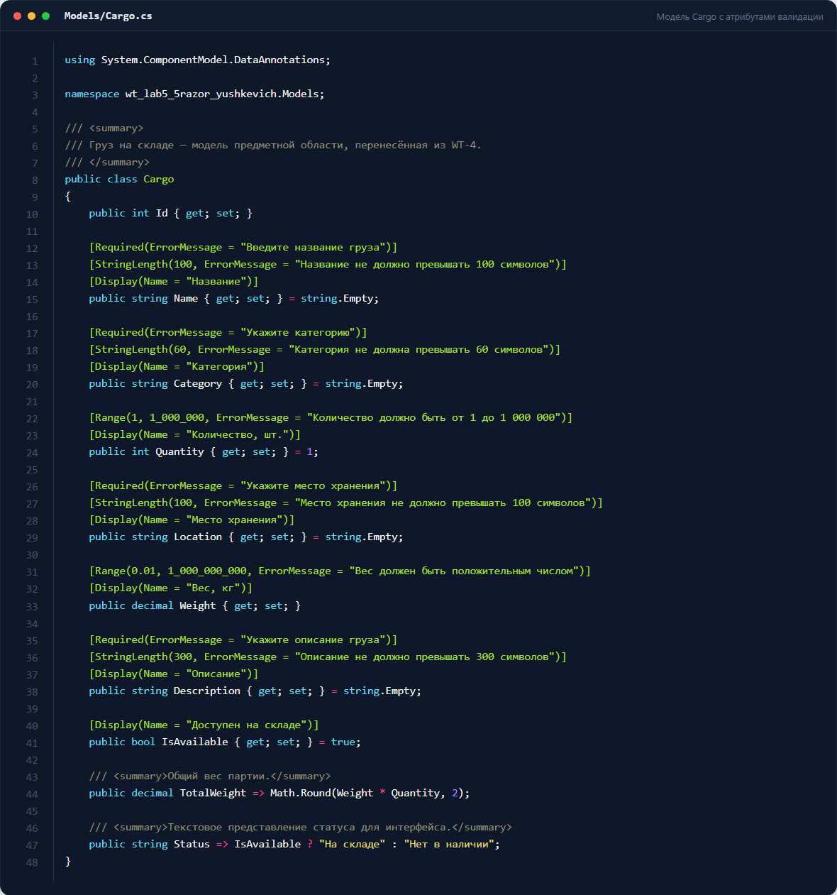
Models/Cargo.cs — модель, атрибуты валидации и вычисляемые свойства[Required], [StringLength] и [Range] задают серверные правила и автоматически попадают в клиентскую валидацию.[Display(Name = ...)] даёт русские подписи полей без дублирования текста в разметке.TotalWeight и Status вычисляются на лету — в хранилище хранятся только исходные данные.В лабораторной работе не требуется база данных, поэтому используется статический список в памяти. Он общий для всех PageModel: страница добавления записывает объект, а каталог и главная сразу видят изменение.
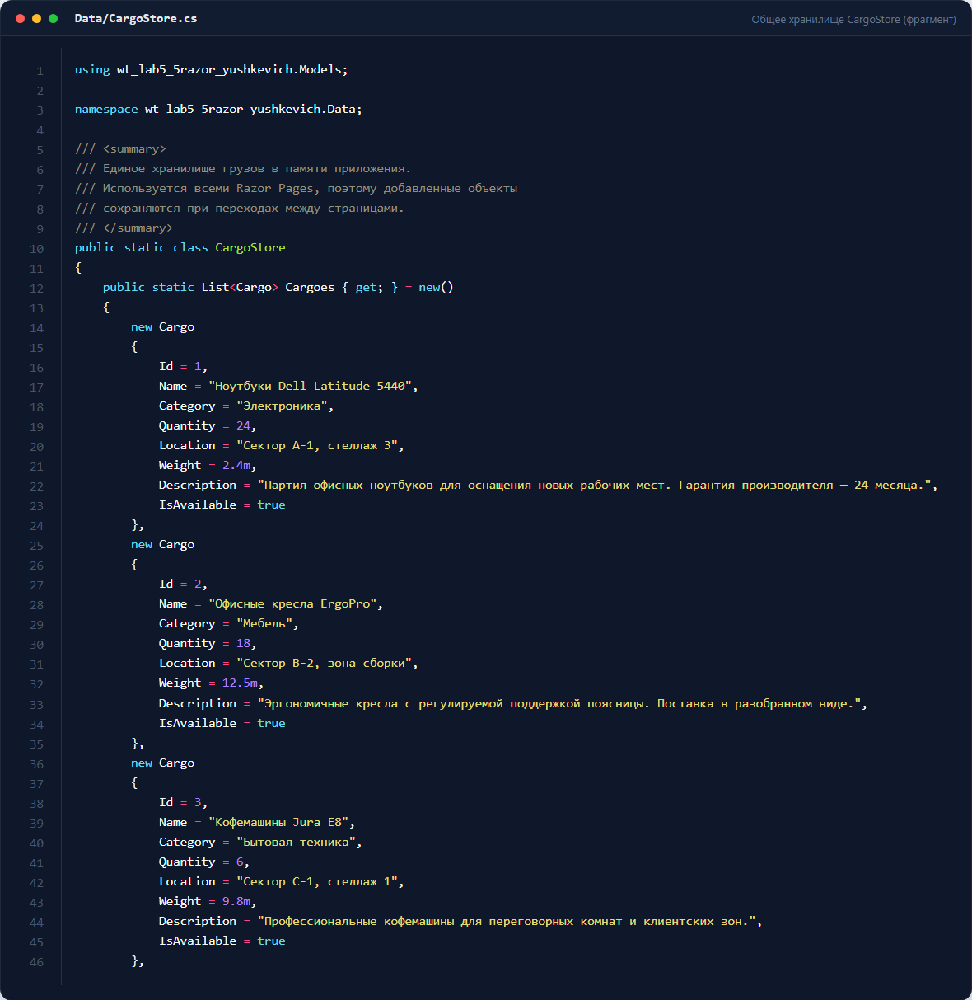
Data/CargoStore.cs — стартовый набор грузов и общий списокstatic class CargoStore содержит единственный List<Cargo> на всё приложение.GetNextId() возвращает максимальный Id + 1, поэтому новые записи не конфликтуют.
IndexModel хранит параметры поиска и результаты выборки. Значения
Search и Category связываются из query string, поэтому
фильтр сохраняется в адресе страницы и работает без JavaScript.
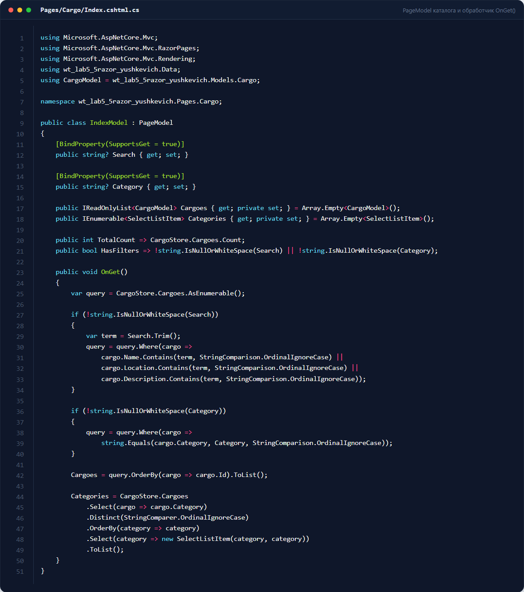
Pages/Cargo/Index.cshtml.cs — свойства страницы и обработчик OnGet()Search ищет подстроку без учёта регистра в названии, месте хранения и описании.Category фильтрует по точному совпадению категории.Id, а Categories формирует список для выпадающего меню.TotalCount и HasFilters используются в разметке для счётчика и бейджа активного фильтра.
Разметка получает данные из PageModel через @Model. Цикл
@foreach выводит карточки, а <partial> подключает
общий фрагмент _CargoCard.cshtml — разметка карточки не дублируется.
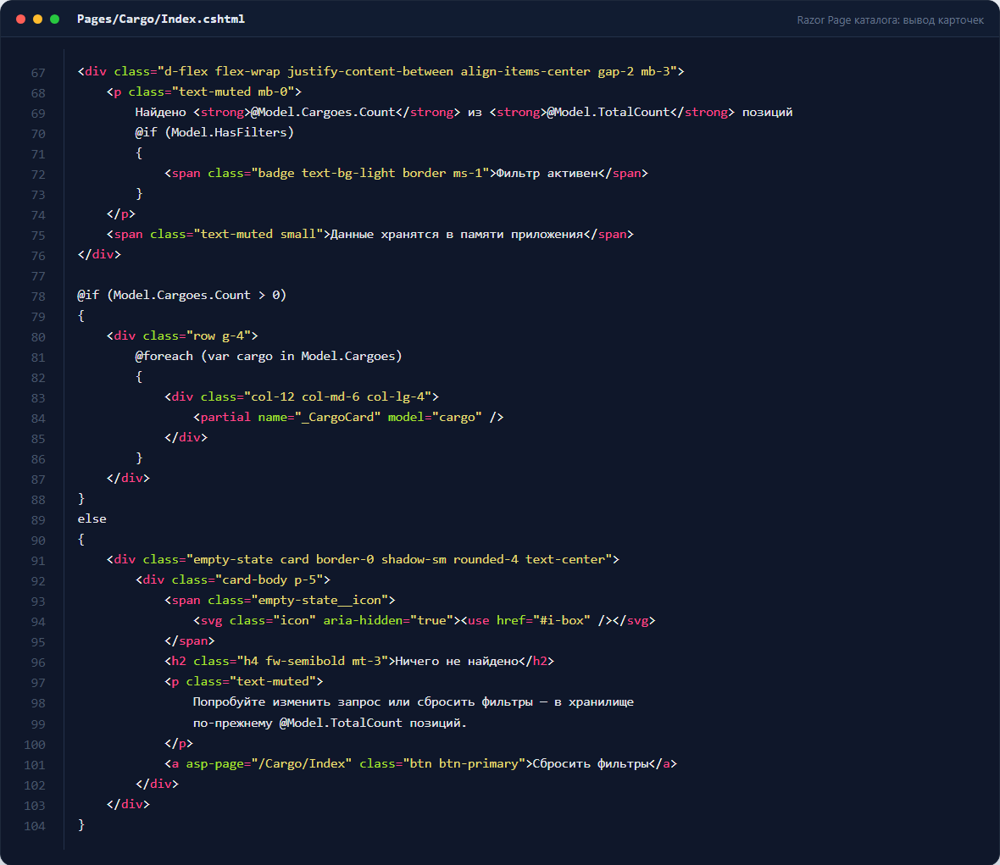
Pages/Cargo/Index.cshtml — счётчик, цикл по грузам и partial-карточка@foreach и @if — управляющие конструкции прямо в разметке.<partial name="_CargoCard" model="cargo" /> — переиспользуемый компонент представления.asp-page и asp-route-* — генерация ссылок по именам страниц, а не по «сырым» URL.row g-4, col-12 col-md-6 col-lg-4 дают адаптивную сетку.При пустом результате показывается отдельное состояние с предложением сбросить фильтры — страница не выглядит «сломанной».
Форма добавления — центральный сценарий работы. Свойство Cargo
помечено [BindProperty], поэтому ASP.NET Core автоматически связывает
поля POST-запроса с моделью до вызова OnPost().
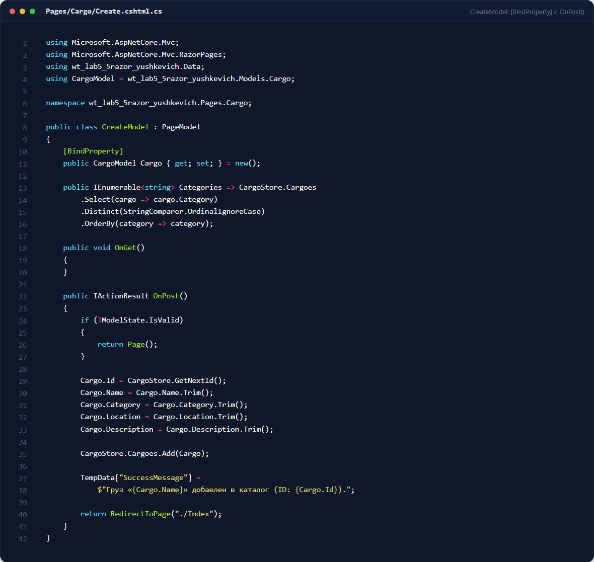
Pages/Cargo/Create.cshtml.cs — привязка модели и обработчик POSTModelState.IsValid — единая точка проверки серверной валидации; при ошибке возвращается та же страница.Id выдаётся хранилищем, а строковые поля очищаются от пробелов через Trim().TempData["SuccessMessage"] переживает редирект и показывает одноразовое уведомление.RedirectToPage("./Index") реализует паттерн Post/Redirect/Get — форма не отправляется повторно при обновлении.
Форма собрана на Tag Helpers: они генерируют корректные name/id,
подставляют значения, подписи и атрибуты клиентской валидации. Отдельный
partial подключает jQuery Validation.
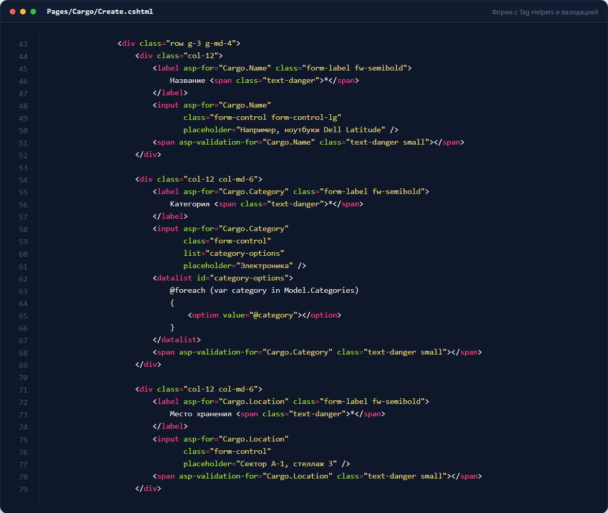
Pages/Cargo/Create.cshtml — поля формы, asp-for и вывод ошибокasp-for="Cargo.Name" связывает input со свойством и добавляет data-val-* атрибуты.asp-validation-for выводит сообщение конкретного поля, asp-validation-summary="ModelOnly" — общие ошибки.asp-items="Model.Categories" заполняет выпадающий список категорий.<partial name="_ValidationScriptsPartial" /> включает клиентскую проверку до отправки формы.label, подсказки placeholder, обязательные поля
отмечены звёздочкой, а кнопки имеют понятные тексты — форма удобна и с клавиатуры.
Один набор атрибутов модели работает с двух сторон: jQuery Validation проверяет
форму в браузере, а ModelState.IsValid повторно проверяет данные на
сервере. Сообщения локализованы на русский язык.
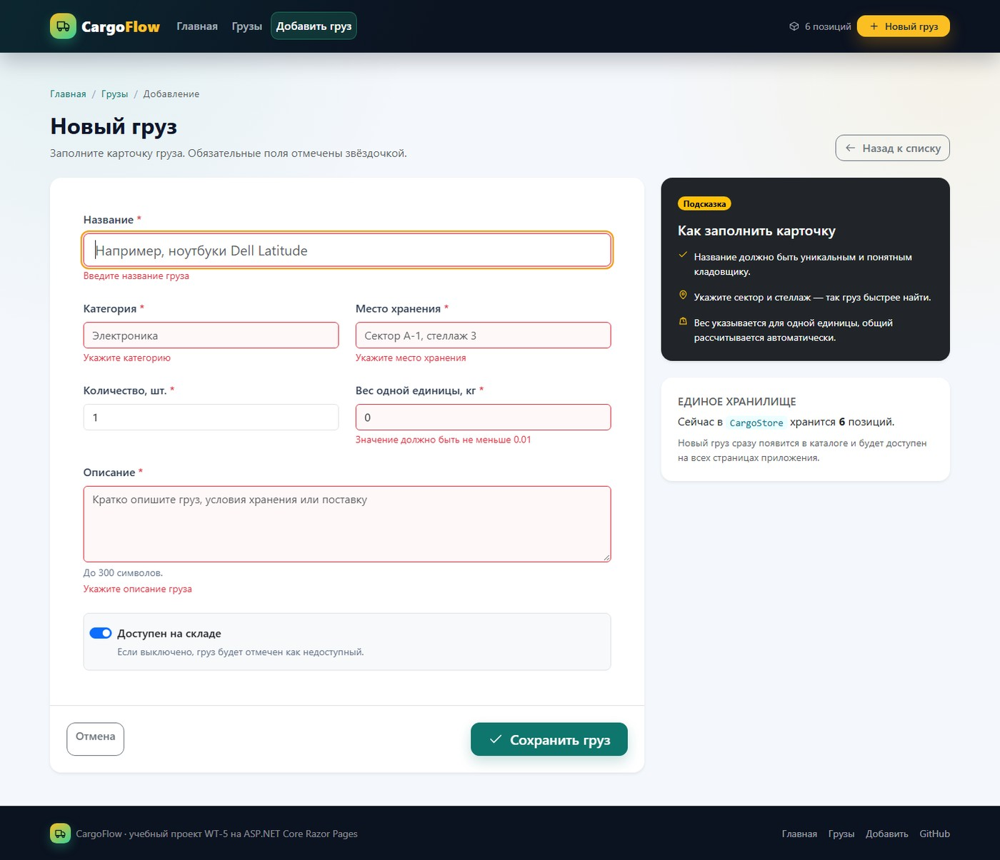
| Поле | Ограничение |
|---|---|
| Название | обязательно, не более 100 символов |
| Категория | обязательно, не более 60 символов |
| Количество | целое число от 1 до 1 000 000 |
| Место хранения | обязательно, не более 100 символов |
| Вес единицы | от 0,01 до 1 000 000 000 кг |
| Описание | обязательно, не более 300 символов |
Program.cs включена культура ru-RU, но десятичный
разделитель принудительно оставлен точкой — иначе HTML input type="number"
с дробным весом не связывался бы с моделью.
Страница подробностей принимает id из query string и возвращает
NotFound(), если запись не найдена. Удаление сделано в два шага:
OnGet показывает подтверждение, OnPost удаляет запись.
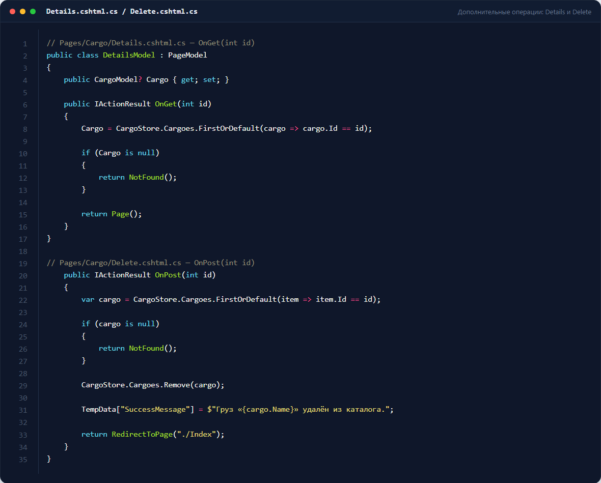
Details.OnGet(int id) и Delete.OnPost(int id)RedirectToPage("./Index") и показывается сообщение через TempData.id возвращается NotFound(), а не пустая страница.
EditModel загружает запись по id в OnGet,
а в OnPost проверяет модель и переносит изменённые поля в существующий
объект хранилища. После сохранения — редирект в каталог с уведомлением.
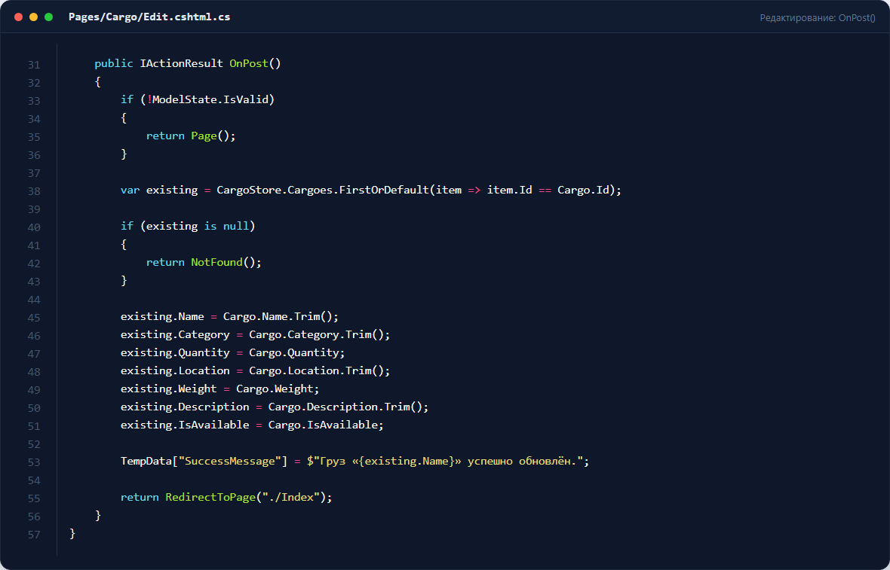
Pages/Cargo/Edit.cshtml.cs — сохранение изменений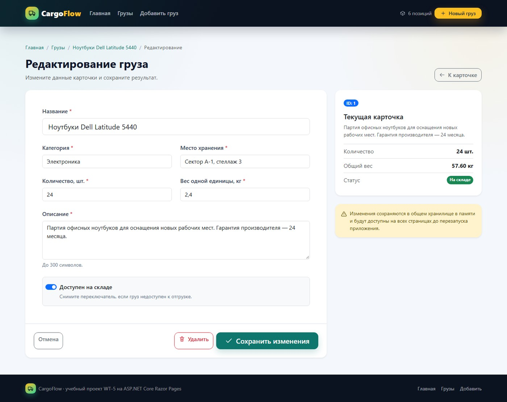
Главная показывает состояние склада: количество позиций, доступные грузы, суммарное количество единиц и общий вес. Ниже — возможности приложения и три последних добавленных груза.
Каталог выводит грузы адаптивными карточками: на широком экране — три колонки, на планшете — две, на телефоне — одна. Над списком расположены поиск и фильтр по категории.
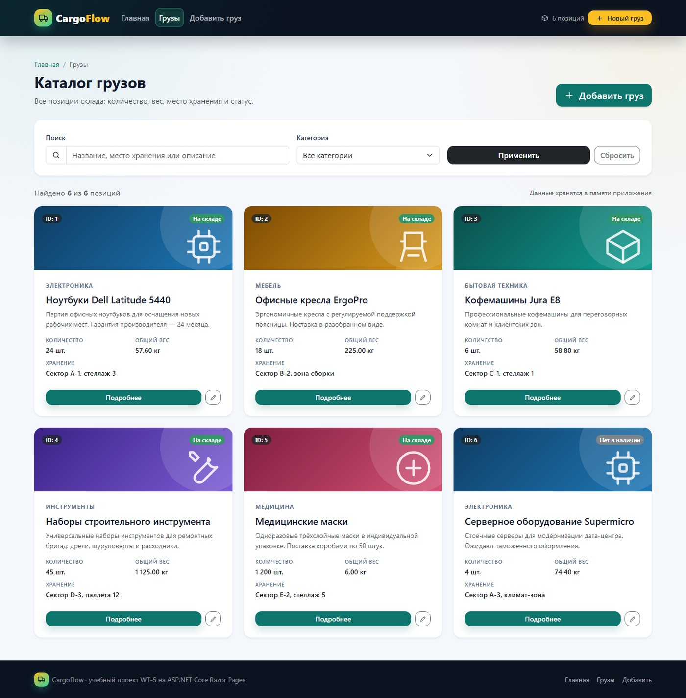
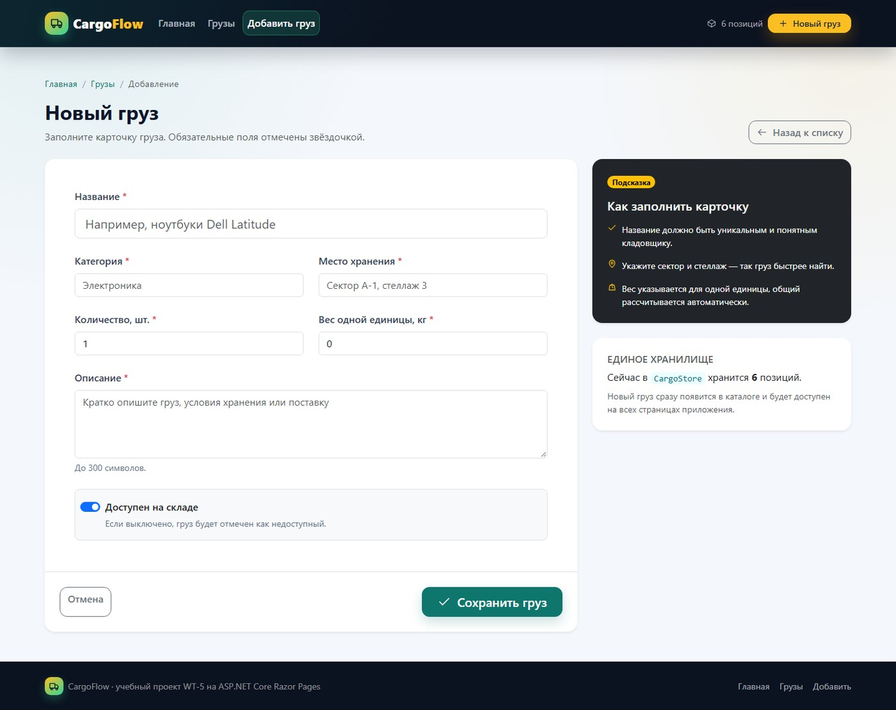
/Cargo/Index?Search=ноутбук&Category=Электроника. Ссылкой на такую
выборку можно поделиться, а обновление страницы не сбрасывает фильтр — JavaScript
для поиска не требуется.
| Параметр | Поведение |
|---|---|
Search | Поиск без учёта регистра по названию, месту хранения и описанию |
Category | Точное совпадение категории; пустое значение означает «Все категории» |
| Сброс | Ссылка на /Cargo/Index без параметров очищает выборку |
Карточка подробностей показывает все поля груза, включая вычисленные общий вес и статус. Удаление требует явного подтверждения и показывает, какая именно запись будет удалена.
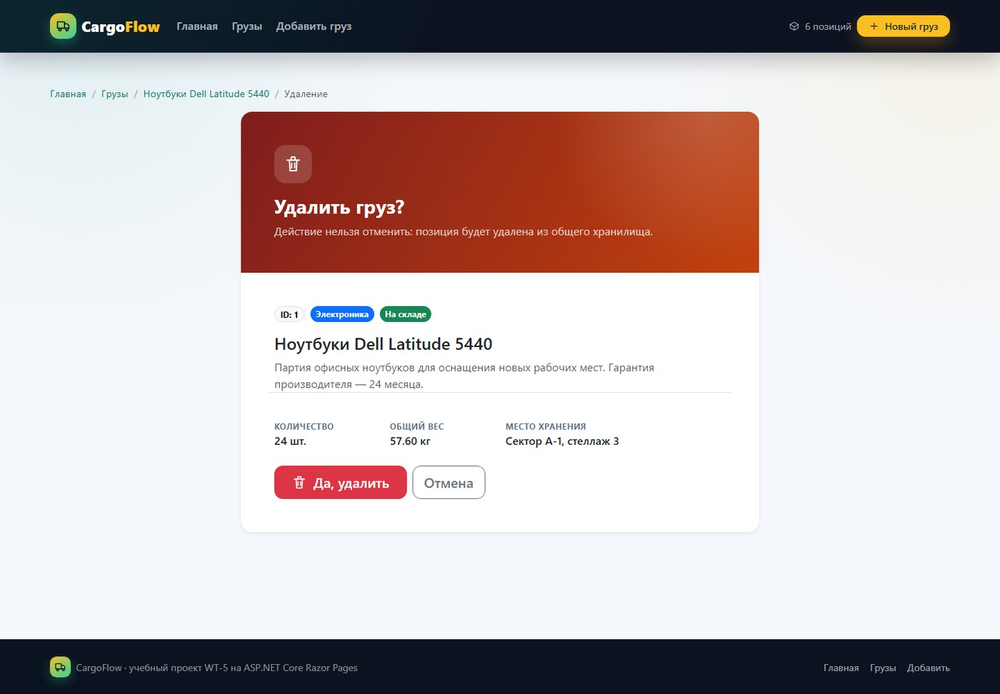
/Cargo/Details?id=… и показывает полную информацию о грузе.OnPost(int id) повторно проверяет существование записи и возвращает
NotFound() для неизвестного идентификатора.
После успешного POST-запроса выполняется редирект в каталог. Сообщение хранится
в TempData, поэтому отображается один раз и не «залипает» при
обновлении страницы.
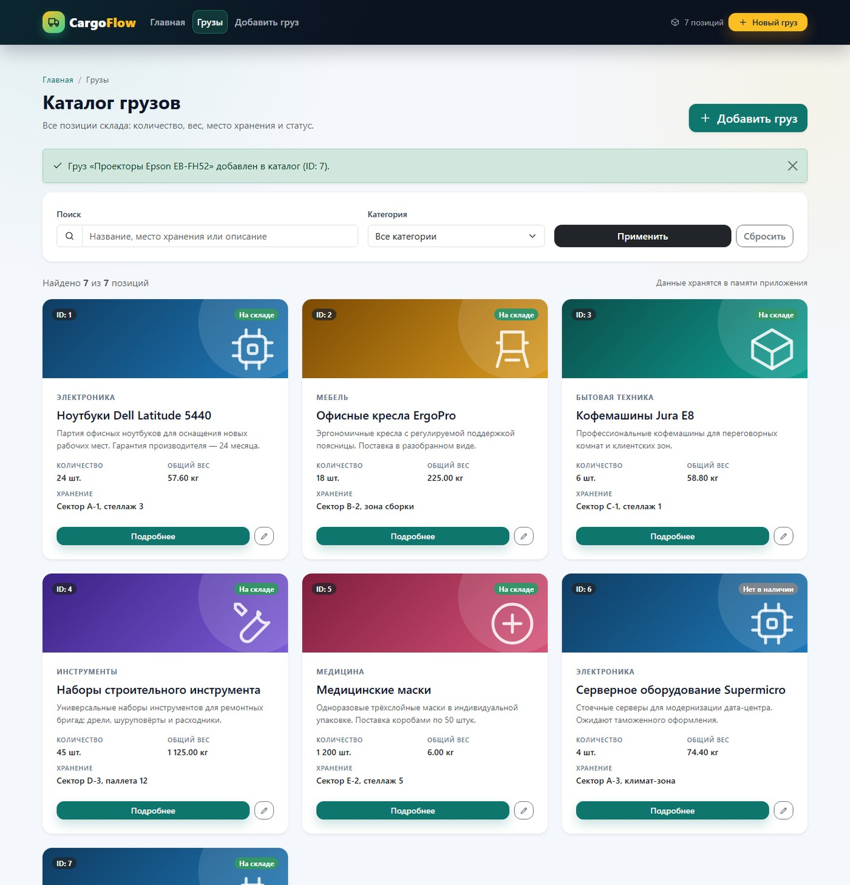
Интерфейс проверен в эмуляции экрана шириной 390 px. Сетка Bootstrap перестраивается в одну колонку, навигация сворачивается в «бургер», а карточки и формы остаются читаемыми.
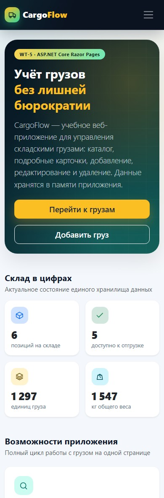
col-12 col-md-6 col-lg-4 задают одну, две и три колонки
соответственно. Навигация использует navbar-expand-lg и
collapse, поэтому на узком экране меню не занимает всю шапку.
_Layout.cshtml задаёт общую шапку, навигацию, контейнер контента и
подвал. Все страницы подключаются через _ViewStart.cshtml и получают
одинаковое оформление.
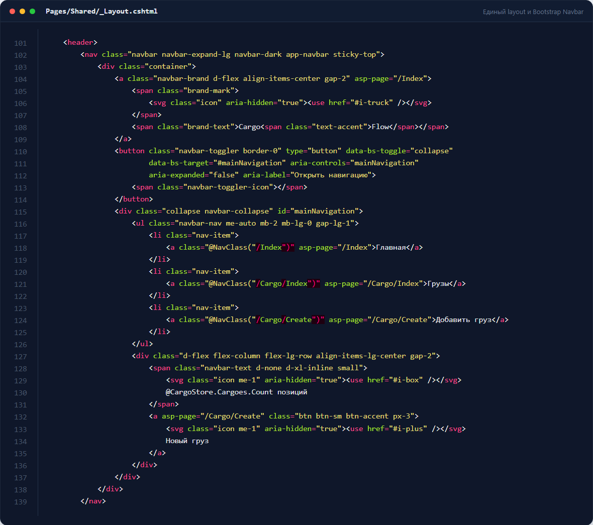
Pages/Shared/_Layout.cshtml — Bootstrap Navbar и активный пункт менюsticky-top удерживает навигацию сверху при прокрутке.NavClass() подсвечивает активный пункт меню по текущему пути.<use href="#i-..." />.wwwroot/lib — приложение не зависит от CDN.wwwroot/css/site.css: фирменные цвета, тени,
hover-эффекты карточек и адаптивные правила. Страницы не дублируют стили.
Используется многоступенчатая сборка: на этапе build восстанавливаются
зависимости и выполняется dotnet publish, а в финальный образ копируется
только опубликованное приложение.
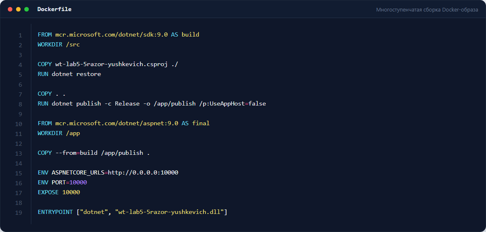
Dockerfile — сборка и запуск на .NET 9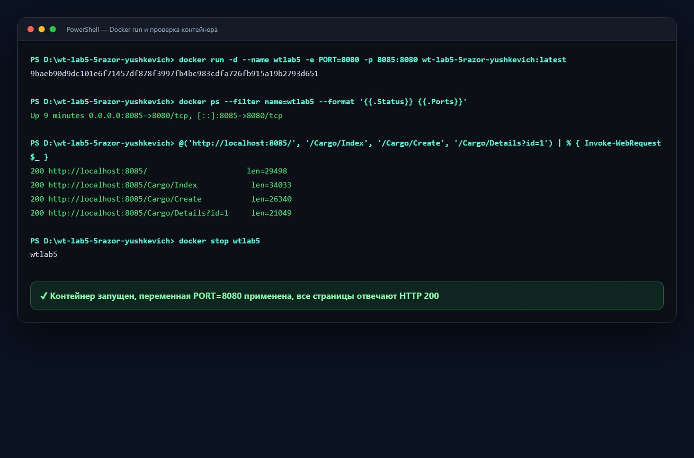
Образ собран локально командой docker build. В логе видны все стадии:
восстановление пакетов, сборка проекта, публикация и формирование финального слоя.
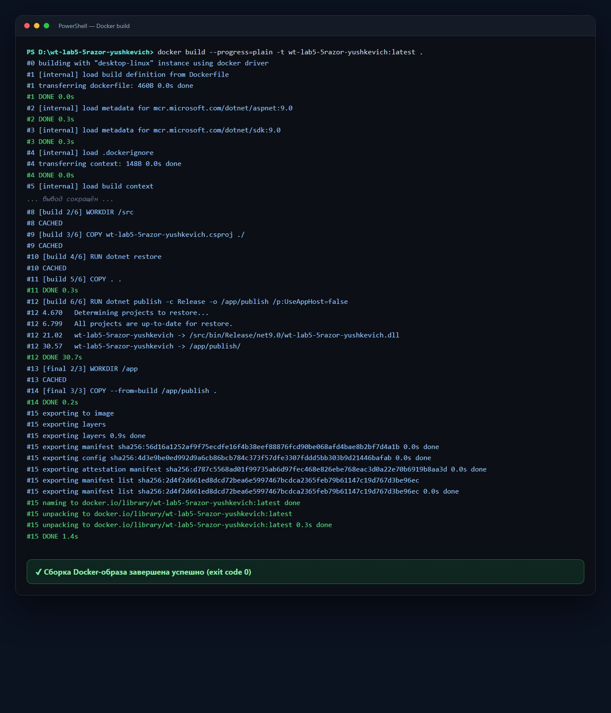
wt-lab5-5razor-yushkevich-e PORT=8080 и проброшенным портом 8080:8080.PORT и слушает http://0.0.0.0:8080./, /Cargo/Index, /Cargo/Create и /Cargo/Details?id=1 отвечают HTTP 200.
Сервис создан вручную в Render Dashboard как Web Service с Runtime
Docker. Источник — репозиторий GitHub, ветка main,
Dockerfile ./Dockerfile. При push в main Render
автоматически пересобирает и публикует новую версию.
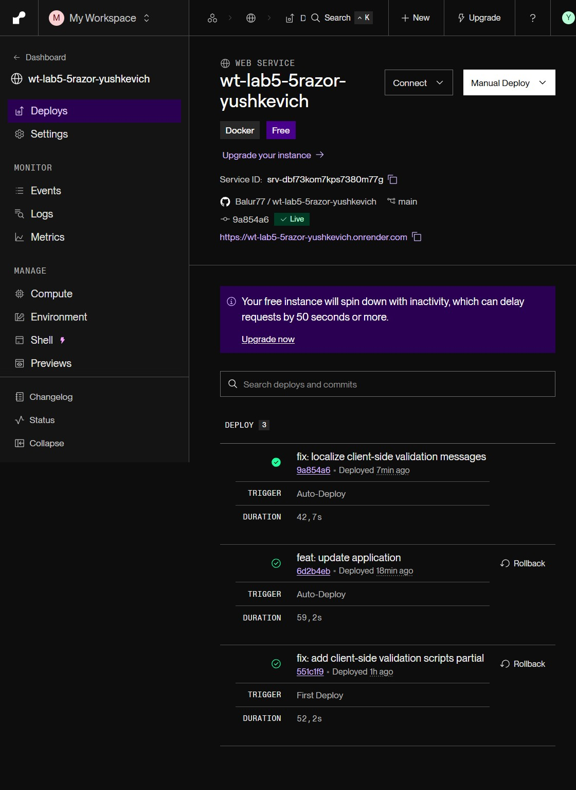
9a854a6| Платформа | Render Web Service |
| Runtime | Docker |
| Репозиторий | Balur77 / wt-lab5-5razor-yushkevich |
| Ветка | main |
| Dockerfile | ./Dockerfile |
| Статус | Live |
| Публичный URL | wt-lab5-5razor-yushkevich.onrender.com |
Последний deployment завершился статусом Deploy succeeded · Live. Публичная версия открывается по адресу Render и обслуживает те же Razor Pages, что и локальный запуск.
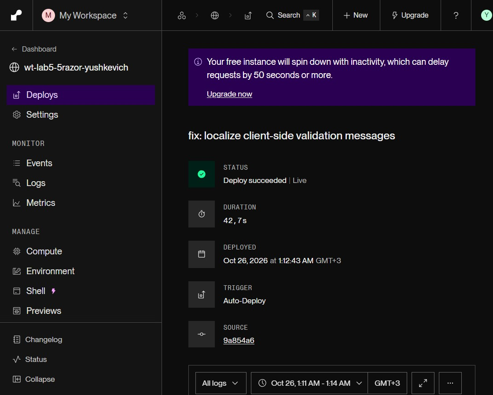
9a854a6: статус Live, длительность 42,7 с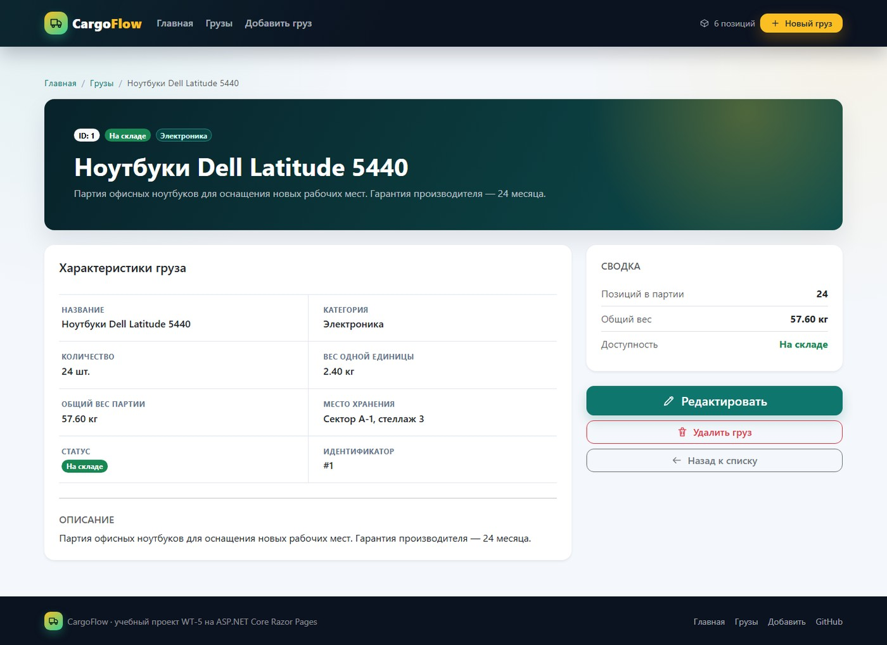
| Маршрут | Ответ | Результат |
|---|---|---|
/ | 200 OK | Главная страница загружается |
/Cargo/Index | 200 OK | Каталог и карточки грузов |
/Cargo/Create | 200 OK | Форма и клиентская валидация |
/Cargo/Details?id=1 | 200 OK | Подробная карточка груза |
Исходный код размещён на GitHub. История показывает последовательную работу:
базовое приложение, документация, запуск на Render, исправления валидации.
Финальная версия находится в ветке main.
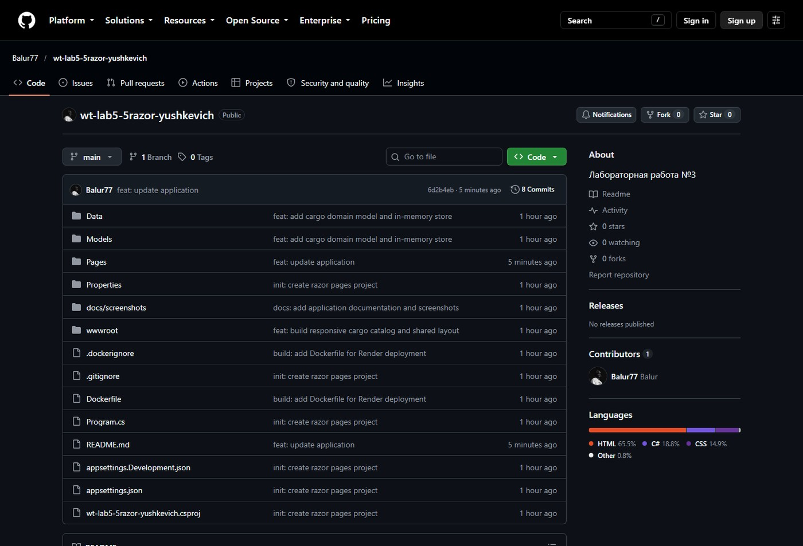
Balur77/wt-lab5-5razor-yushkevich на GitHub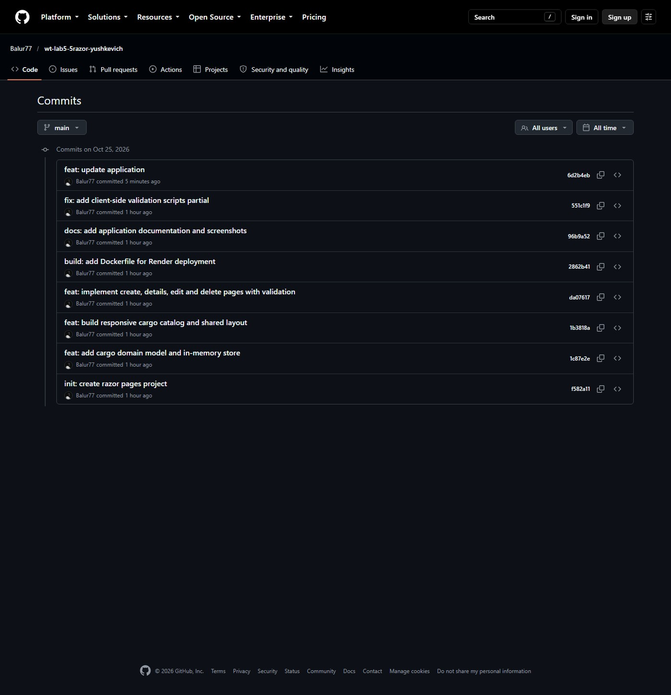
mainRazor Pages не является отдельным фреймворком: это модель организации приложений ASP.NET Core, которая использует ту же маршрутизацию, middleware, DI, Razor и Tag Helpers. Отличается способ группировки кода страницы.
| Аспект | ASP.NET Core MVC | Razor Pages |
|---|---|---|
| Единица организации | Controller + Action + View | Страница + PageModel |
| Обработчик запроса | Метод контроллера | OnGet() / OnPost() |
| Расположение | Controllers/ + Views/ | Pages/ — рядом |
| Привязка формы | Параметры action или модель | [BindProperty] |
| Редирект | RedirectToAction() | RedirectToPage() |
| Маршрут | Атрибуты / шаблоны контроллера | Путь файла страницы |
| Разметка | Razor View | Razor Page |
| Хорошо подходит | Крупные API и сложные сценарии | Страничные сценарии, CRUD, формы |
Для приложения с преобладанием страничных сценариев Razor Pages оказался компактнее: код страницы и её обработчики находятся в одном месте, не нужно создавать отдельный контроллер и представление, а имена обработчиков напрямую отражают HTTP-метод.
MVC остаётся удобнее там, где много общих API-действий, сложная маршрутизация или несколько представлений на один контроллер. В нашем CRUD-приложении Razor Pages дал более простую структуру при сохранении всех возможностей ASP.NET Core: валидации, Tag Helpers, DI и middleware.
| Ситуация | Рекомендация |
|---|---|
| Страничные CRUD-сценарии и формы | Razor Pages — код страницы и обработчик рядом |
| Крупный API с множеством endpoint’ов | MVC-контроллеры или Minimal API |
| Одна страница — несколько представлений | MVC: контроллер управляет выбором View |
| Быстрый старт небольшого сайта | Razor Pages: меньше файлов и связующего кода |
В ходе лабораторной работы приложение учёта грузов было переведено на ASP.NET Core Razor Pages, дополнено полным CRUD-сценарием, адаптивным интерфейсом и опубликовано в Docker-контейнере на Render.
.cshtml и класс PageModel.OnGet(), OnGet(int id), OnPost(), OnPost(int id).[BindProperty] и проверка ModelState.IsValid.TempData.Приложение работает локально, в Docker-контейнере и на публичном домене Render. Все основные маршруты отвечают HTTP 200, форма добавления проверяет данные на клиенте и на сервере, а изменения сохраняются в общем хранилище в памяти. Репозиторий содержит исходный код, README, Dockerfile и скриншоты.